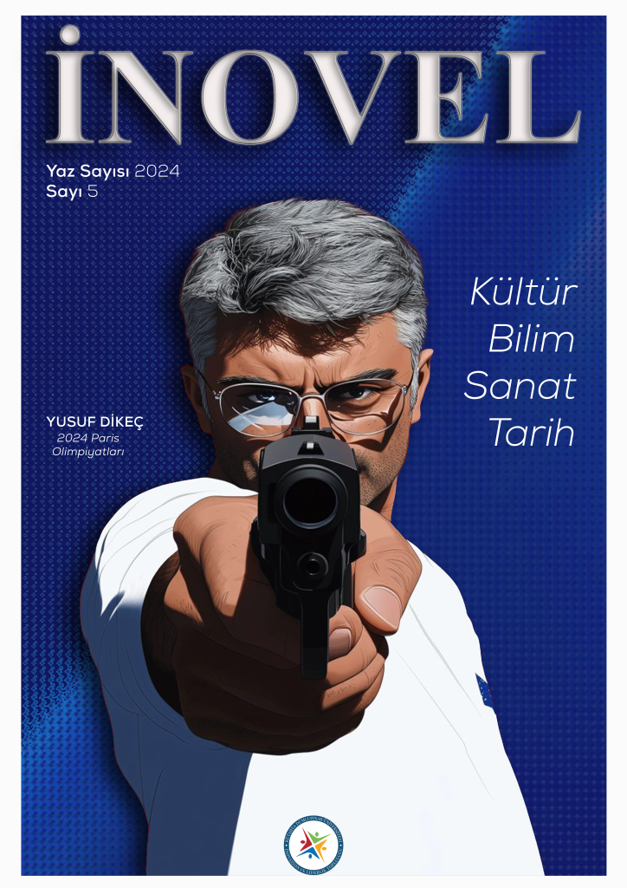

SAYI ARŞİVİ
İNOVEL
DERGİ.
Okumak istediğin sayıyı seç. Dergiyi burada açabilir ya da PDF olarak indirebilirsin.
5 sayı 4 okunabilir PDF
Tüm sayılar
Tüm içerikler5 sayı · 4 okunabilir PDF

Sayı bulunamadı.
Başka bir sezon veya yıl deneyebilir, filtreleri temizleyebilirsin.